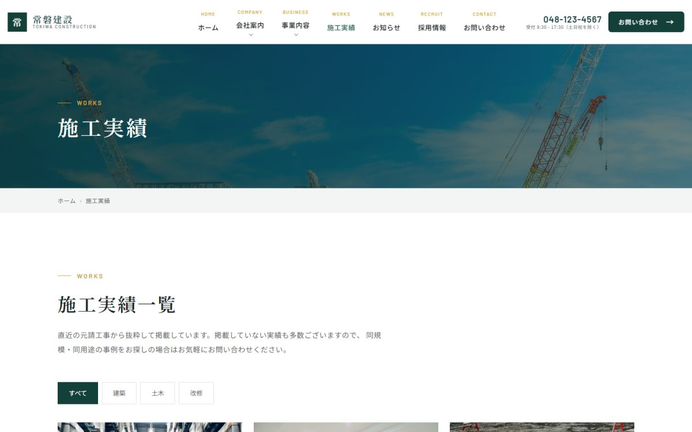

| 種別 | 建設業（BtoB）／架空の企業を想定した自主制作 |
|---|---|
| 担当範囲 | 企画・デザイン・実装 |
| 使用技術 | HTML ／ CSS（BEM設計）／ JavaScript ／ Bootstrap |
| ページ数 | 10ページ（会社概要・事業内容・実績・実績詳細・お知らせ・採用・お問い合わせ ほか） |
二種類の来訪者を想定する
BtoBのコーポレートサイトには、性質の違う来訪者が来ます。発注を検討している取引先は「何ができる会社か」「実績はあるか」を見ますが、求職者は「どんな人が働いているか」「待遇はどうか」を見ます。
同じ導線に混ぜると両方に刺さらないため、トップページから分岐させ、採用情報は独立したページ群として作りました。
実績の見せ方
建設業では施工実績が信頼の根拠になります。一覧では工種で絞り込めるようにし、詳細ページでは工期・規模・発注者といった、同業者が知りたい情報を表で整理しました。
企業サイトとして必要なもの
- 会社概要・沿革・許可番号などの基本情報
- お知らせ（更新されている会社に見えることが重要）
- プライバシーポリシー
- 問い合わせ導線を全ページに配置